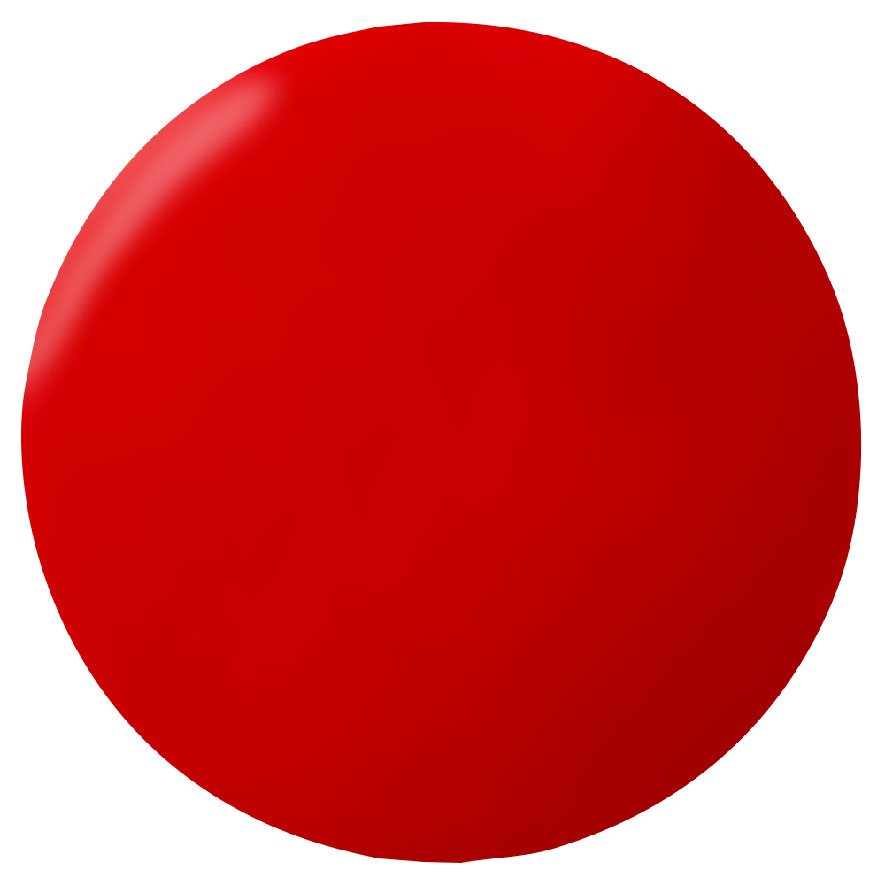
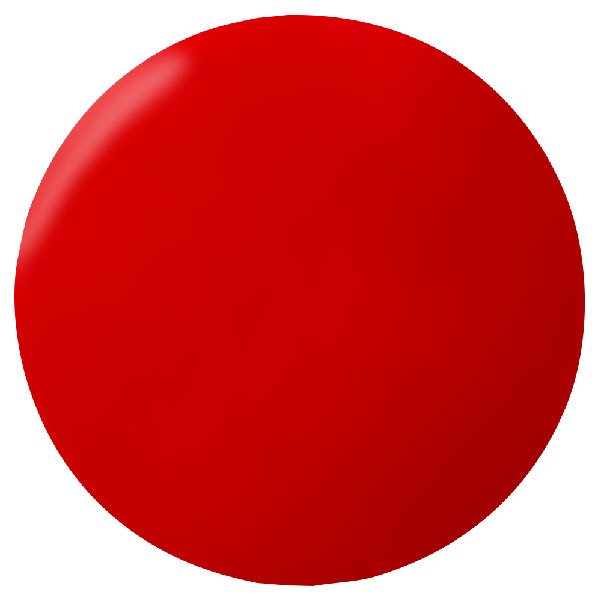
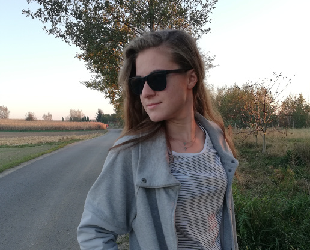

#o_mnie
   |
|
| OD: Ja |  |
| DO: Cały świat | |
| Temat: Moje życie | |
| Cześć, Mam na imię Kasia i mam 18 lat. Jestem uczennicą klasy trzeciej technikum informatycznego w Przeworsku, małym miasteczku na podkarpaciu. Każdego dnia w szkole uczę się czegoś nowego o programowaniu i sieciach komputerowych. Moimi ulubionymi przedmiotami są matematyka i projektowanie baz danych. Dwa razy w tygodniu uczestniczę dodatkowo w kółku z fizyki, by dobrze przygotować się do matury. W wolnym czasie lubię spotykać się z moimi przyjaciółmi i rozwijać moje umiejętności w dziedzinie informatyki. |
|
#moje_pasje
W wolnym czasie jeżdżę na rowerze i zwiedzam nowe miejsca. Mój rekord to ponad 85 kilometrów.
Jestem wielką fanką Marvela. Posiadam nawet komiks o Wolverine’ie i kubek z moim ulubionym superbohaterem – Iron Manem.
Około miesiąc temu wzięłam udział w kursie grafiki 3D i od tego czasu staram się wciąż rozwijać moje umiejętności w tej dziedzinie.
Uwielbiam podróżować z moimi przyjaciółmi i zwiedzać świat. Za szczególnie ciekawe uważam zdobywanie wulkanów.
#moje_certyfikaty
Podczas mojej nauki w szkole średniej zdobyłam kilka certyfikatów. Poniżej znajduje się ich lista:
Kliknij link, aby zobaczyć certyfikat!
- NDG Linux Unhatched
- Introduction to IoT
- NDG Linux Essentials
- Be Your Own Boss
- Enterpreneurship
- Introduction to Cybersecurity
- Introduction to Internet of Everything
- Get Connected
- IT Essentials
Posiadam również certyfikat uczestnictwa w konkursie NetRiders IT Essentials w 2017 roku.
#wyjazd_do_Cisco
13 kwietnia 2018 roku miała miejsce moja pierwsza wizyta w siedzibie Cisco w Krakowie. Podczas wizyty ja i moja klasa mieliśmy okazję poznać historię firmy oraz zwiedzić miejsca, gdzie młodzi inżynierowie tworzą swoje projekty. Zobaczyliśmy SOC oraz Lab, a mnie naprawdę zafascynowały urządzenia, które zapewniają niezawodność sieci komputerowych. Po krótkiej pogadance na temat bezpieczeństwa w Internecie oraz lekcji obsługi VoIP, wszyscy wzięliśmy udział w quizie, sprawdzającym wiedzę zdobytą tego dnia. Ta wizyta pozwoliła mi dowiedzieć się, jak wygląda praca w korporacji oraz zachęciła mnie do zdobywania nowych umiejętności każdego dnia.